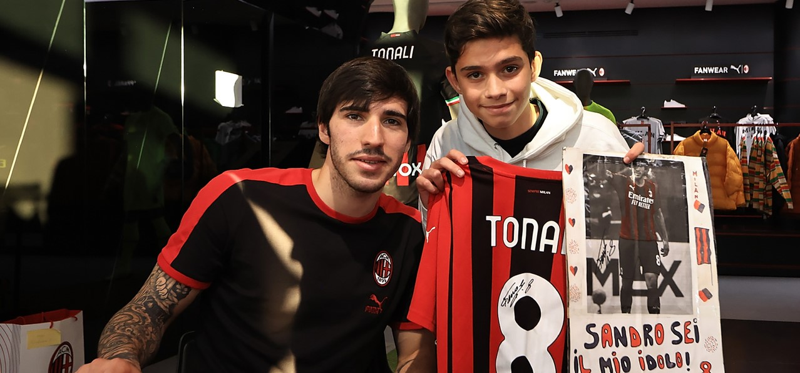
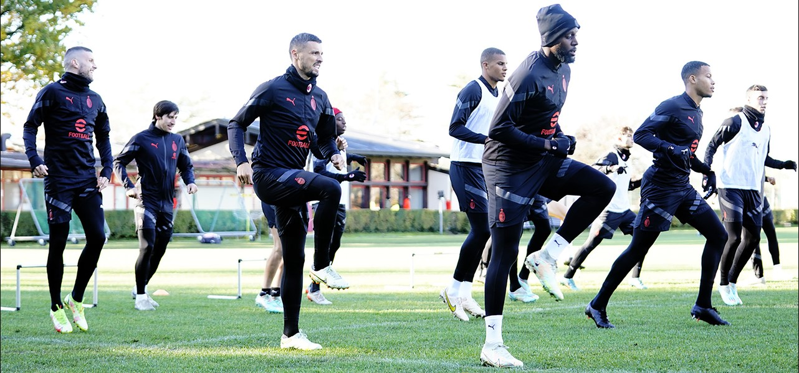
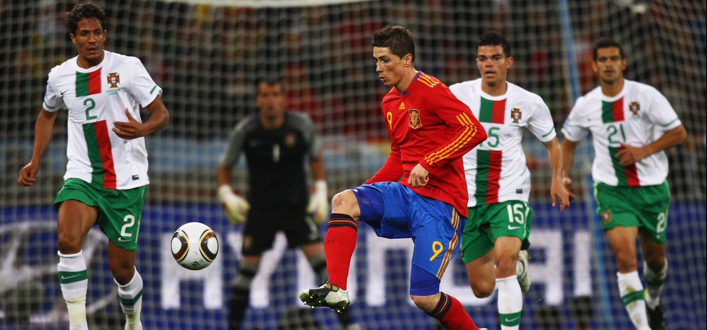
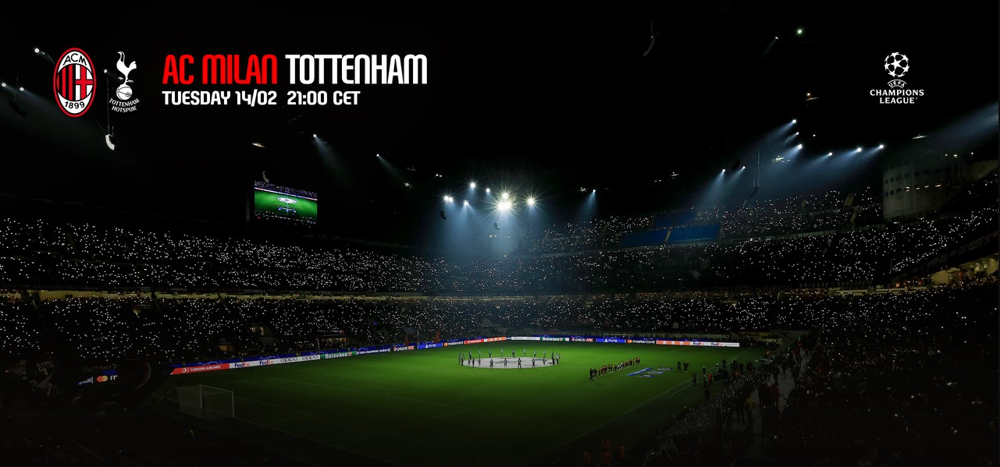

Today at the official Casa Milan Store, the beating heart of the Rossoneri's world, dozens of fans were able to meet midfielder Sandro Tonali in person. The midfielder was there to chat, sign jerseys and gadgets and take some memorable photos with the fans. Among the opportunities provided by the club to take part in the event, fans were able to get involved in the RE:JERSEY recycling project, launched by PUMA to promote production models that ensure greater sustainability through end-to-end recycling methods. At the Casa Milan Store last week, fans were able to return an old item of clothing made of 100% polyester, which will be reused for the production of new garments, in exchange for a space at the event.
The team were busy at Milanello ahead of the season restarting It was a morning at Milanello for the Rossoneri, who gathered for breakfast before heading into the dressing room for today's training session. Paolo Maldini and Frederic Massara were also present at the Centro Sportivo. The group immediately took to the central pitch for the warm-up phase, carried out with some athletic exercises with the low hurdles and cones. Training continued with the group engaged in an aerobic circuit that preceded a series of technical exercises; before returning to the dressing rooms, the group had the usual training match on a reduced pitch. Tomorrow's programme includes a morning training session.
Spain playing in the round of 16 against Morocco: let's remember a 2010 World Cup clash with the former Rossoneri Fernando Torres was, at the time, one of the most successful strikers of his generation - he is one of six players in history to have won the Champions League, Europa League, European Championship and World Cup - but also a splendid talent not always expressed at 100 %. His is a career marked by goals: many, but not always as many as the predictions suggested at the beginning of his career, after a remarkable development in Atlético Madrid's youth academy. He became their youngest ever debutant, in 2001, and also the earliest captain in history at the age of 19 in 2003. That same year El Niño made his debut with the Spanish national team - in a friendly against Portugal - and a few months later, in April 2004, came his first goal against Italy. That Bel Paese he then tasted for a few months, as a player much more mature in age, with the AC Milan shirt in the 2014/15 season.
AC Milan will face Tottenham in the first leg of the Champions League round of 16 on Tuesday 14 February at 21:00. The Rossoneri made it through to the knockout phase thanks to the 10 points they got in Group E, finishing behind Chelsea; Tottenham, on the other hand, were the first-placed team in Group D with 11 points. Tickets for AC Milan v Tottenham are available online at singletickets.acmilan.com, at the Casa Milan Ticket Office and on VivaTicket circuits, as below: Champions League season ticket holders: To reward the loyalty of fans who subscribed to the Champions Pack for the three group matches, it will be possible to guarantee their seats from 12:00 CET on Monday 12 December until 23:59 CET on Tuesday 13 December. There will be some sectors that cannot be reserved, because they are UEFA reserved: in these cases, season ticket holders will find a seat in the newly assigned sector when purchasing. Those who do not reserve their seats at this stage will still be able to during the second stage. Serie A season ticket holders: They will be able to reserve a space from those available from 12:00 CET on Wednesday 14 December to 23:59 CET on Thursday 15 December. All Serie A subscribers who did not buy the Champions Pack and Champions League season ticket holders who did not confirm their place in the previous dedicated phase are eligible for this phase of sales. General sale: from 12:00 CET on Friday 16 December.
